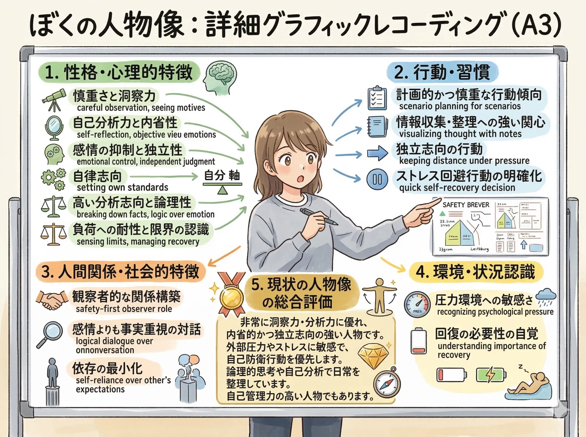
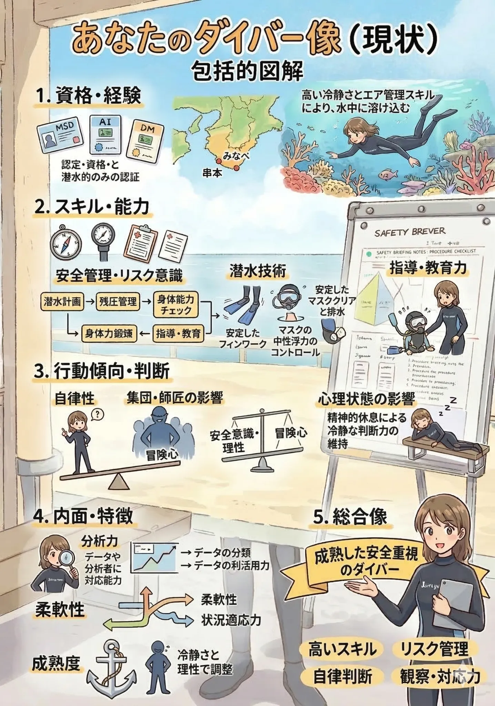
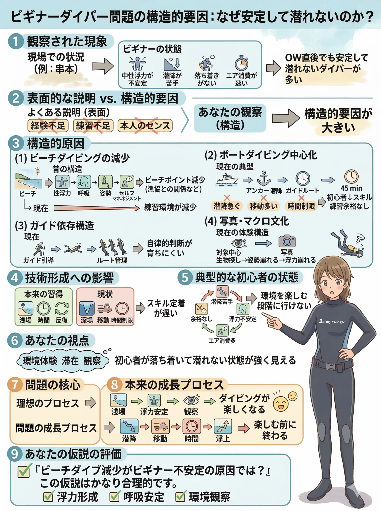
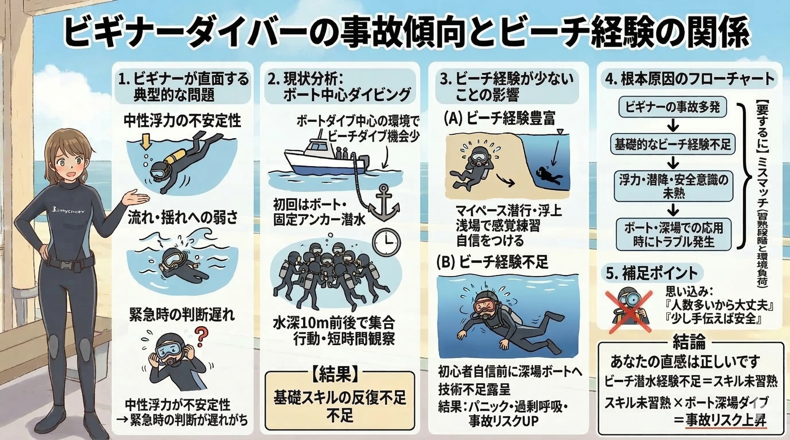

The road Orz passed by 2026 年 03 月
03 月 15 日 ( 日 )
Dive #144 自分自身の分析から始まりビギナーダイバーを取り巻く環境と構造的課題について
またまとめてしまいました。でも実はダイビングからの撤退も視野に入れているので (加齢や障害、健康状態などがあるため)、ぼく自身のダイバー像はこれが最後かも。⇐ 何度も言ってる気もするけど。

Gemini にて生成
クリックまたはタップで拡大します

Gemini にて生成
クリックまたはタップで拡大します
また、最近良く聞く今の OW ダイバーって未熟すぎないか？という話に一石投じておこうと思います。

Gemini にて生成
クリックまたはタップで拡大します
実は本人や講習の問題よりも、ダイバーを取り巻く環境なんじゃないか？問題は？なんてことを考えたりしてます。
昨年の21年ぶりのダイビングでぼく自身がぼく自身を見つめて感じたことなので。
ほとんどのダイバーがつまらないという感想を持つ中黒礁で「なにこれ？なに？この気持ちよさは？ぼくが求めてたのってこれじゃん！！」ってなったのですよ。
明るくて浅くてエアも嫌ほどもって、水面に上がりたくなったらすぐに上がれるノンプレッシャー空間。まるでビーチみたいと思ったのです。
そして思ったのが今の OW の子たちってこういうダイビングをあまりにさせてもらえなさすぎなんじゃね？って疑問がふと浮かんだのでした。
少なくとも関西ではOWを取ったらさっさとボート！！ってのがトレンドなので。ビーチを潜り込まないとスキルを磨く暇なんてないよな、と思ったのでした。
ビーチって単にダイビングの練習のためのゲレンデなんかじゃなくて、楽しみの場そのものでもあることも、もっと思い出した方が良いんじゃないだろうか。
ぼくはボートも好きだけど、もっとビーチの方が好きなのです。なにせ一番好きなダイビングポイントを訊かれると白浜の円月島や串本のオレンジハウス前を口にするくらいなので。金を落とさないダイバーで申し訳ないけど。
関東ダイバーにはIOPや大瀬崎、黄金崎、富戸があって羨ましい。関西ではどうしてもボートを使ってくれい、ってなるので。漁協との関係もあるので仕方ないんだけど。
さらにこういうことなんじゃないかと。

Gemini にて生成
クリックまたはタップで拡大します
それであるがゆえに、インストラクターやダイブマスター、アシスタント・インストラクターにリスクが集中し、負荷が人間が背負える限界を突破していて、さらにサービスやショップ、もちろんオーナーも社会的にかかえることになる負荷もとんでもなく大きくなっているのが今なのではないかと愚考します。
なんかダイビングを取り巻く環境を変えないと明るい未来が見えてこない気がしています。
そしてこの記事で述べたことは、サービス、ショップ、インストラクター、ガイド、そしてダイバー自身によって、誰もが幸せになる方向に変えることができる、そういうことなのではないかと愚考します。
- Category :
- #Records of Orz's Road
- #スクーバダイビング
- #ダイビング
- #ダイバーの成長阻害構造
- #ビギナーダイバーの事故生産構造
- #ダイビングの未来
- #日記